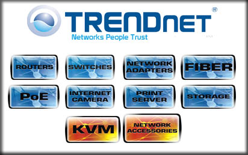

Solutions : get ready.
Simplify your IT Needs
All kind of Networking Products, iP Cameras, Multimedia Products, Antivirus and Smart Security.
- 

All kind of Networking Products, iP Cameras, Multimedia Products, Antivirus and Smart Security.
We introduce ourselves as a multi-product company having technology tie-ups with Prestigious organization in the field of office Automation in tune with IT industry's latest technologies & products. We provide Consultancy, Support & Services & offer ready made Packages as well as Customised solutions.
Prism Automation Systems is a total IT solution partner that focuses solely on businesses unique computing, networking and application needs. Serving hundreds of organizations across every major industry, the company helps it's clients achieve their business leadership objectives by lowering the cost and maximizing the performance of their information technology systems.
We are Authorized reseller of Networking, Multimedia and Security Products
15 June 12 |
Became Authorized Reseller Partner of TRENDnet Products.
01 May 12 | .
Became Authorized Reseller Partner of MAXPRO Products.
12 December 11 | .
Became Authorized Partner of ESS Distribution (P) Ltd. to Sell & Support ESET Products.
Computer hardware is the physical part of a computer, including the digital circuitry, as distinguished from the computer software that executes within the hardware. The hardware of a computer is infrequently changed, in comparison with software and data, which are "soft" in the sense that they are readily created, modified or erased on the computer. Firmware is a special type of software that rarely, if ever, needs to be changed and so is stored on hardware devices such as read-only memory (ROM) where it is not readily changed (and is therefore "firm" rather than just "soft").
Most computer hardware is not seen by normal users. It is in embedded systems in automobiles, microwave ovens, electrocardiograph machines, compact disc players, and other devices. Personal computers,
Prism Automation Systems offers more than 1000 products. Prism Automation Systems is also a service powerhouse delivering logistics and supply chain management services to increase value and drive efficiency for companies at all levels of the IT supply chain. For technology solution providers, our  specialized divisions offer customers technical expertise and a well-informed sales support staff trained to handle the needs of market categories such as enterprise computing, converging technologies, small-to-mid-size businesses (SMB), and the government and education sectors. The company has developed services and solutions designed to address the needs of each technology category and market segment, with expert services to support customers serving vertical and specialty markets.